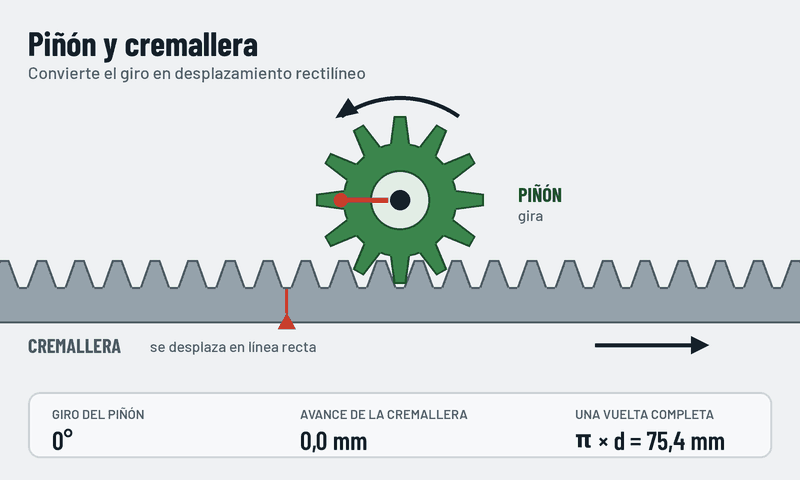
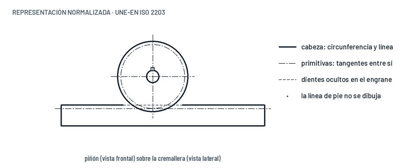

Piñón y cremallera
El piñón es una rueda dentada que engrana con una barra dentada recta, la cremallera. Cuando el piñón gira, la cremallera se desplaza en línea recta. También funciona al revés: si empujas la cremallera, el piñón gira.


Qué observar
- Si el piñón cambia de sentido de giro, la cremallera cambia de sentido de avance.
- La marca roja del piñón y la de la cremallera se encuentran en el punto de contacto: el piñón rueda sobre la cremallera sin deslizar.
- Cuanto más grande es el piñón, más avanza la cremallera en cada vuelta.
Cuánto avanza
avance por vuelta = π · d
d es el diámetro primitivo del piñón. Con un piñón de 12 dientes y módulo 2 mm, d = 24 mm, así que cada vuelta mueve la cremallera π · 24 ≈ 75,4 mm.
Media vuelta, como en la animación, son 37,7 mm.
Cómo se representa
- Piñón: circunferencia de cabeza gruesa y primitiva de trazo y punto.
- Cremallera: línea de cabeza gruesa y línea primitiva tangente a la circunferencia primitiva del piñón.
- En la zona de engrane, los dientes de una de las piezas se dibujan ocultos.
Dónde lo encontramos
- En el taladro de columna, la palanca de avance hace girar un piñón que baja el husillo con la broca.
- En la dirección de muchos coches, el volante gira el piñón y la cremallera orienta las ruedas.
- En puertas correderas automáticas y en ejes lineales de máquinas.